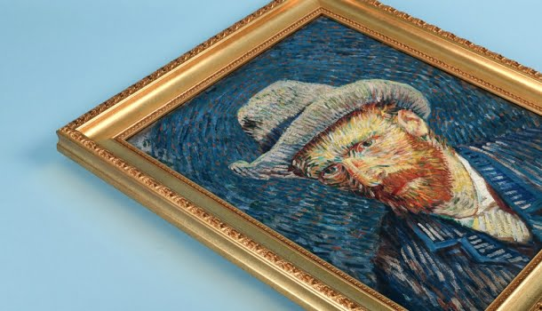
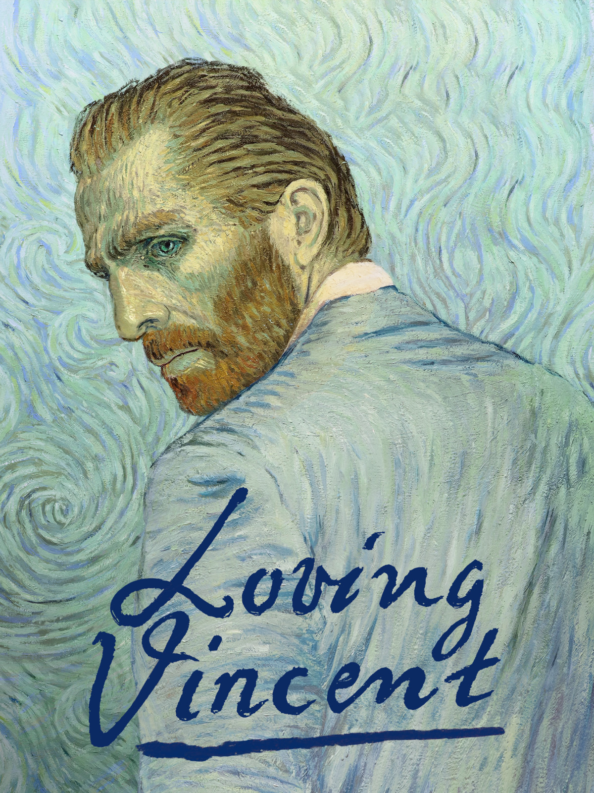
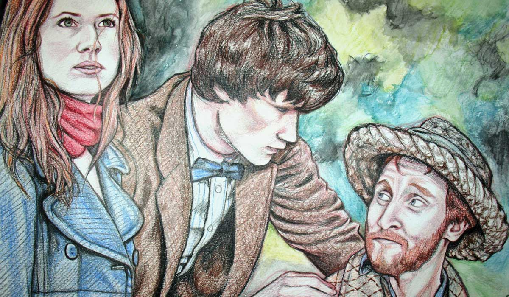
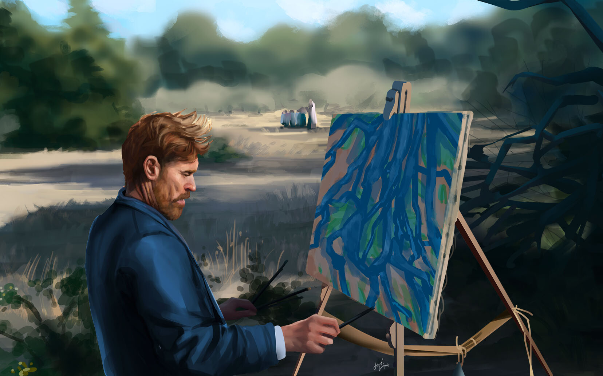

Minha experiência
Banco de pedra no asilo de Saint-Remy (1889) é um retrato da rotina de internação de Van Gogh nos intervalos entre as crises. As árvores tortuosas e as marcas do pincel que mostram a agitação na paisagem, traduzem, segundo muitos historiadores, os conflitos interiores do artista.
A obra A arlesiana (1890) foi mencionada por Van Gogh em duas cartas de junho de 1890. A primeira relata ao amigo Paul Gauguin (1848-1903) que a obra foi feita com base em um desenho dele e que, por isso, Van Gogh a considerava uma obra conjunta. A segunda, escrita para sua irmã, descreve a pintura como a imagem ideal do caráter das mulheres de Arles. A modelo é Marie Julien Ginoux (1848-1911), dona do Café de la Gare, que alugou um quarto para o artista em 1888.
O modelo de O escolar (O filho do carteiro — Gamin au Képi) (1888) é, como comprova o estudo das cartas do artista, Camille, o filho do carteiro Joseph Roulin. Vários membros da família Roulin posaram para Van Gogh em Arles. O mesmo fundo amarelo e vermelho foi utilizado em outras obras dessa fase, incluindo seus autorretratos. As cores vibrantes e saturadas deixam as marcas das pinceladas mais evidentes.

Poder ver de frente, é uma experiência incrível, notável toda a delicadeza e os traços vívidos, cada pincelada e detalhe da obra. E tentado representar seus sentimentos através da arte.

Assim como nos outros livros, também é perceptível os detalhes colocados por ele na pintura e as cores que foram representadas. E perceber toda a paixão pelo que fazia. Muito legal a oportunidade!

As cores fortes chamam bastante a atenção, e todos os detalhes, o comando das cores é uma coisa bem bonita e emocionante de se ver. Pra mim ele é o melhor pintor de Todos!
“Procure compreender o que dizem os artistas nas suas obras-primas, os mestres sérios. Aí está
Deus.”
― Vincent Van Gogh

Com amor, Van Gogh
1891. Um ano após o suicídio de Vincent Van Gogh, Armand Roulin encontra uma carta por ele enviada ao irmão Theo, que jamais chegou ao seu destino. Após conversar com o pai, carteiro que era amigo pessoal de Van Gogh, Armand é incentivado a entregar ele mesmo a correspondência. Desta forma, ele parte para a cidade francesa de Arles na esperança de encontrar algum contato com a família do pintor falecido. Lá, inicia uma investigação junto às pessoas que conheceram Van Gogh, no intuito de decifrar se ele realmente se matou
Doctor Who - Vincent e o Doutor
Intrigado por uma figura sinistra na pintura de Vincent van Gogh A Igreja de Auvers , o viajante do tempo alienígena Doctor e sua companheira Amy Pond voltam no tempo para encontrar Van Gogh e descobrir que Auvers-sur-Oise foi atormentada por uma criatura invisível, conhecida como Krafayis , que apenas Van Gogh pode ver. O Doutor e Amy trabalham com Van Gogh para derrotar os Krafayis, mas em sua tentativa de fazer Van Gogh perceber seu legado trazendo-o para o futuro, eles finalmente percebem que nem todo o tempo pode ser reescrito e há alguns males que estão fora de ao alcance do médico.
No Portal da Eternidade
Após sofrer com o ostracismo e a rejeição de suas pinturas em galerias de arte, Vincent Van Gogh decide ouvir o conselho de seu mentor, Paul Gauguin, e se mudar para Arles, no sul da França. Lá, lutando contra os avanços da loucura, da depressão e as pressões sociais, o pintor holandês adentra uma das fases mais conturbadas e prolíficas de sua curta, porém meteórica trajetória
Vincent - Don McLean
"Vincent" é uma canção de Don McLean escrita como um tributo a Vincent van Gogh. Uma referência à pintura de Van Gogh 1889 The Starry Night. McLean escreveu a letra em 1971 após ler um livro sobre a vida de Van Gogh. Foi lançado no álbum American Pie de 1971 de McLean; no ano seguinte, a canção liderou a parada de singles do Reino Unido por duas semanas, e alcançou o 12º lugar nos Estados Unidos, onde também alcançou a segunda posição na parada Easy Listening. A Billboard classificou-a como a música nº 94 de 1972 . A música utiliza principalmente violão, mas também inclui acordeão, marimba e cordas.
Theo van Gogh
Durante toda sua vida, Van Gogh, recebeu do irmão Theo apoio irrestrito e total lealdade. Dividiram o apartamento de Montmartre; quando Vincent mudou-se para Arles e, depois, em Saint-Remy, Theo continuou a sustentá-lo e a encorajá-lo.Essa afeição, de certo modo, custou-lhe a vida, pois ele morreu subitamente, seis meses depois de Van Gogh, deixando uma esposa jovem e um bebê chamado Vincent. Nascido Theodorus van Gogh (1857-1891), mais conhecido por seu apelido familiar Theo, nasceu em Groot-Zundert, na província de Brabant, nos Países Baixos, era o irmão mais novo de Vincent van Gogh.
Em 8 de abril de 1914, 25 anos depois de sua morte, os restos mortais de Theo van Gogh foram transportados para o cemitério de Auvers-sur-Oise, na França, ao lado do túmulo do irmão.No mesmo ano foi publicada pela primeira vez a correspondência trocada pelos dois irmãos. Os dois irmãos mantiveram uma troca intensiva de correspondências onde Theo procurava encorajar seu irmão depressivo e Vincent desvelava seus pensamentos e sua alma de artista. Estas CARTAS foram reunidas e publicadas na forma de livro.
s correspondências do pintor foram traduzidas para o inglês e disponibilizadas online pelo Museu Van Gogh, a instituição que possui a maior coleção de obras do artista no mundo. São mais de 900 cartas que Vincent escreveu para vários amigos e membros da família, principalmente para seu irmão mais novo, Theodorus Van Gogh, chamado de Theo. Junto às cartas, às vezes ele também enviava ilustrações, muitas delas esboços de pinturas em andamento.
A coleção se inicia em 1872, com algumas notas escritas para Theo, até a última carta de Van Gogh para seu irmão, em julho de 1890. Além de apresentarem fatos pessoais sobre a vida do pintor, as cartas também indicam a progressão de sua carreira.